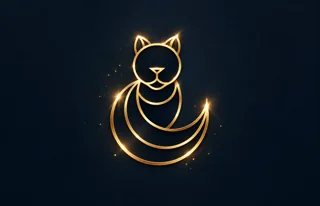

兩種天空
從凌雲與外公的手札，讀見兩代人對家的牽掛。
翻開第一頁 →
喵叔 Moonlit Stories小說寫時間，攝影留下光。
在這裡，慢慢讀一個人的世界。
今晚不必看完所有東西。挑一段文字、一組影像，讓月光替你把速度放慢。
收藏與閱讀進度保存在這台裝置，無須登入。
《風門夜譚》全文上線，收錄引子與十回。已移除 PDF 頁碼、整理段落並潤飾文字，與其他小說共用目錄、字級、書籤和閱讀進度。
不必先知道要找什麼。讀一篇故事、看一組照片，或沿著一段走過的路出發。
「每個人心中，都有一道尚未醒來的月光。」沿著「月光」探索作品 →
不必照順序。從封面、名字或一點直覺開始；閱讀進度與書籤會替你記住離開的位置。
WELCOME TO MOONLIT STORIES
文字是故事，照片是片刻，影片則把來不及說完的心情留下。
《浮生歲月：她與他的五個章節》、《兩種天空》第一部與第二部，以及《烏溪月》、《建康劫·聽泉引》、《緋色雪月抄》、《風門夜譚》完整閱讀。
閱讀《浮生歲月：她與他的五個章節》 →閱讀《兩種天空》第一部 →閱讀第二部〈風中的回聲〉 →閱讀《烏溪月》 →閱讀《建康劫·聽泉引》 →閱讀《緋色雪月抄》 →閱讀《風門夜譚》 →閱讀《異形：起源之沙》 →閱讀《沉睡的呼喚》 →閱讀《殘照寫龍契》 →從雪庭舞劍開始，收藏喵叔的影像故事。相簿將在 Degoo 的新分頁開啟。

雪庭舞劍 · 人像影像創作
白衣映雪，劍鋒向前延伸；一縷髮絲與凝定的目光，留住出劍前的沉靜。

雪庭舞劍 · 人像影像創作
回眸之間，劍光掠過雪庭。衣袖隨身勢舒展，柔和的眉眼與俐落的劍勢在此相遇。
LATEST VIDEO · YOUTUBE
INSTAGRAM REELS
讚數由全站讀者共同累積，無須登入；這台裝置會記住你是否按過。回訪提醒會在你下次打開本站時顯示內容變化，不會傳送手機通知；若想收到 YouTube 通知，請到頻道訂閱並開啟小鈴鐺。
收藏這個網址，從短片與攝影回到故事。開啟回訪提醒後，下次造訪會提示本站內容變化。
喵叔 Moonlit Stories
一處收藏故事與光影的創作空間。
這裡收錄喵叔的小說、攝影與影像創作。從家族記憶、歷史情感，到武俠、奇譚與想像中的世界；也從雪庭的一瞬，走向林蔭午後與台北夜色。
Moonlit，是月光照亮的意思。在這個空間裡，月光是一種安靜的陪伴：為文字留白，為影像留住層次，也為願意停下來的你，留一個慢慢閱讀的位置。
LET'S TALK · 讀者交流
填上暱稱與想法就能送出，不用註冊帳號。留言經喵叔審核後，會顯示在下方。
若留言框未顯示，在新頁面開啟留言區 ↗。也可以到 YouTube 或 Instagram 留言。
— 喵叔 Moonlit Stories